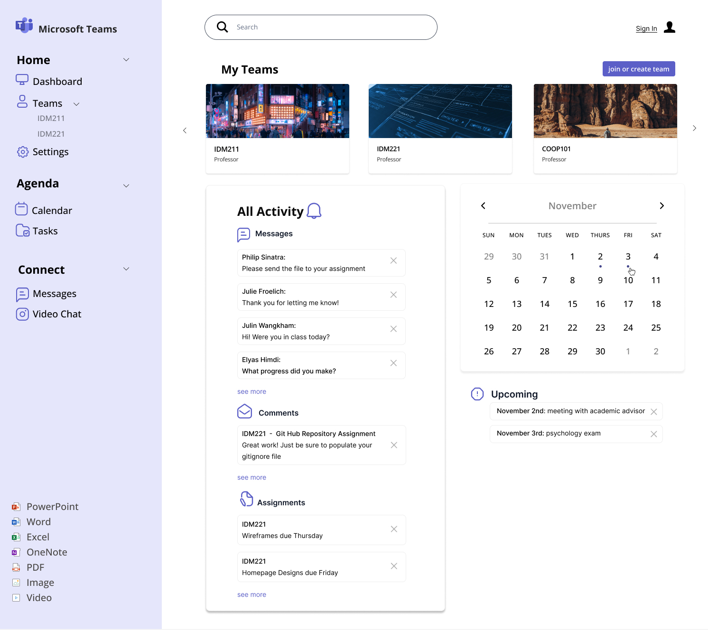

my designs!
Microsoft Teams Redesign
overview: I created a prototype of a redesign of Microsoft Teams in Figma with the targeted user of a Drexel graphic design student who prioritizes organization in mind.
I wanted to create a more simplified version that was more visual and allowed quick and efficient usage.